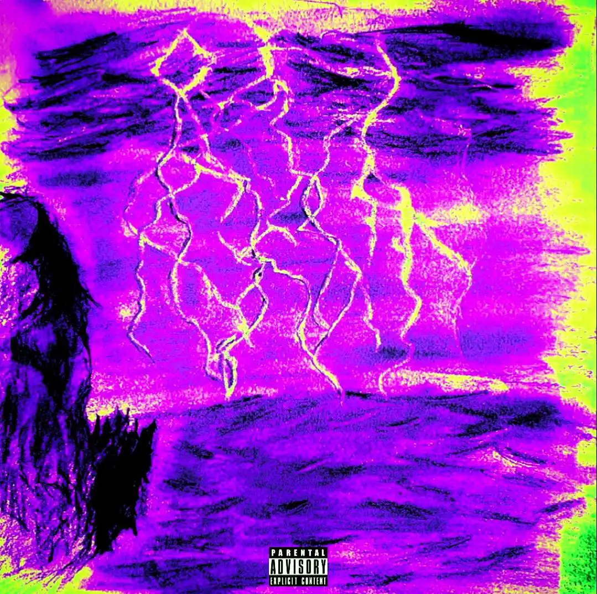

ODMOCNINA16 Metadata TypAlbum InterpretiDaniel Vladimir & yung Počet skladebBude oznámen Datum vydáníBěhem roku 2027 PopisPokračování filozofie alba MOCNIN4 ve stejném žánru: hyperpop. Seznam skladeb Bude oznámen
 Hromy & Blesky Metadata TypAlbum InterpretPepa Hromada Počet skladeb7 Datum vydáníBude oznámeno PopisLove album věnované jeho přítelkyni. Seznam skladeb MUFFIN HROMOSVOD BYOUTY ZKOUŘENÝ V BOUŘI TATTOOS HOT COFFEE MOD MC'LOVIN
OBAL · BUDE OZNÁMEN Za okem Metadata TypAlbum InterpretGazz Počet skladebBude oznámen Datum vydáníBude oznámeno PopisBude doplněn Seznam skladeb Bude oznámen